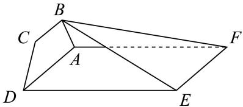
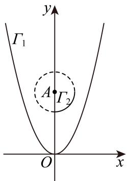

01 【来源：黄浦24一模·1】
查看所属专题已知集合 ，，则 ______。
作答区
整卷阅读 · 学生版 · 21 题
按来源题号排列；内容来自分类汇编，仍需回源核对。
没有找到匹配题目。
已知集合 ，，则 ______。
若函数 为偶函数，则 ______。
已知复数 （ 为虚数单位），则满足 的复数 为______。
若双曲线 经过点 ，则此双曲线的离心率为______。
已知向量 ，，则向量 与 夹角的余弦值为______。
若一个棱长为2的正方体的八个顶点在同一个球面上，则该球的体积为______。
某城市30天的空气质量指数如下：29，26，28，29，38，29，26，26，40，31，35，44，33，28，80，86，65，53，70，34，36，，31，38，63，60，56，34，74，34。则这组数据的第75百分位数为______。
在 中，三个内角 的对边分别为 ，若 ，则 的值为______。
某校共有400名学生参加了趣味知识竞赛（满分：150分），且每位学生的竞赛成绩均不低于90分。将这400名学生的竞赛成绩分组如下：，，，，，，得到的频率分布直方图如图所示，则这400名学生中竞赛成绩不低于120分的人数为______。

若 是一个三角形的内角，且函数 在区间 上是单调函数，则 的取值范围是______。
设 是首项为3且公比为 的等比数列，则满足不等式
的最小正整数 的值为______。
若正三棱锥 的底面边长为6，高为 ，动点 满足
则 的最小值为______。
设 ，则“”是“”的（ ）。
A. 充分而不必要条件
B. 必要而不充分条件
C. 充要条件
D. 既不充分也不必要条件
从3名男同学和2名女同学中任选2名同学参加志愿者服务，则选出的2名同学中至少有1名女同学的概率是（ ）。
A.
B.
C.
D.
若实数 满足 ，则必有（ ）。
A.
B.
C.
D.
在平面直角坐标系 中，对于定点 ，记点集 中距离原点 最近的点为点 ，此最近距离为 。当点 在曲线 上运动时，关于下列结论：
① 点 的轨迹是一个圆；
② 的取值范围是 。
正确的判断是（ ）。
A. ①成立，②成立
B. ①成立，②不成立
C. ①不成立，②成立
D. ①不成立，②不成立
已知等比数列 是严格增数列，其第3、4、5项的乘积为1000，并且这三项分别乘以4、3、2后，所得三个数依次成等差数列。
（1）求数列 的通项公式；
（2）若对任意的正整数 ，数列 的前 项和 ，向量 的模为 ，求数列 的前 项和。
如图，平面 平面 ，四边形 是正方形，，，，。

（1）证明： 平面 ；
（2）求二面角 的正切值。
某公园的一个角形区域 如图所示，其中 。现拟用长度为100米的隔离挡板（折线 ）与部分围墙（折线 ）围成一个花卉育苗区 ，要求满足 。

（1）设 ，试用 表示 ；
（2）为使花卉育苗区的面积最大，应如何设计？请说明理由。
设 为实数， 是以点 为顶点，以点 为焦点的抛物线， 是以点 为圆心、半径为1的圆位于 轴右侧且在直线 下方的部分。

（1）求 与 的方程；
（2）若直线 被 所截得的线段的中点在 上，求 的值；
（3）是否存在 ，满足： 在 的上方，且 有两条不同的切线被 所截得的线段长相等？若存在，求出 的取值范围；若不存在，请说明理由。
设函数 与 的定义域均为 ，若存在 ，满足 且 ，则称函数 与 “局部趋同”。
（1）判断函数 与 是否“局部趋同”，并说明理由；
（2）已知函数 ，。求证：对任意的正数 ，都存在正数 ，使得函数 与 “局部趋同”；
（3）对于给定的实数 ，若存在实数 ，使得函数 与 “局部趋同”，求实数 的取值范围。